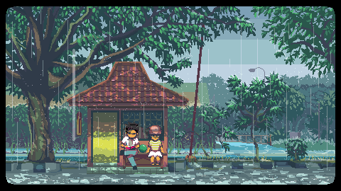

Jurnal & Analisis Game
Merangkai Memori di Bawah Langit Sore
Eksplorasi mendalam mengenai narasi psikologis, kehangatan visual pixel art, dan melodi nostalgia dari mahakarya A Space for the Unbound.
Mulai MembacaEksplorasi mendalam mengenai narasi psikologis, kehangatan visual pixel art, dan melodi nostalgia dari mahakarya A Space for the Unbound.
Mulai Membaca
Dikembangkan oleh Mojiken Studio dan diterbitkan oleh Toge Productions, A Space for the Unbound adalah sebuah game petualangan slice-of-life dengan balutan pixel art yang indah. Berlatar di pedesaan Indonesia akhir era 90-an, game ini menceritakan kisah tentang mengatasi kecemasan, depresi, dan dinamika hubungan masa remaja yang dipadukan dengan kekuatan supernatural misterius.